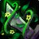
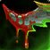
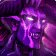
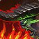

小怪 · 开场
看到仪式首领读鲜血献祭
→ 疾影 减伤 25%
疾影 减伤 25%
3 秒读条，读完祭坛之灵挨个剖开全队，一下物理伤害，还吸收你接下来的治疗。读条时开疾影。两层都在冷却就交黑暗，全队挤在一起时 8 码正好罩住。
毒牙祭坛几乎全是自然伤害和持续毒，噬灭在这里主要靠两层疾影。开场仪式首领的鲜血献祭、拉维的三重喷吐、扭缠蛇的振响、晋升之蛇的感染、神选者的剧毒涌动，看到读条或者被点到就交一层。瓦解专断原始毒蛇的刺耳嘶鸣和高阶进化者的毒伤。尾王祖尔加有一招要记住：拦完光束身上挂着仪式毒液，切骨者读条时开疾影，站进飞斧的路径，流血会把毒液清掉。
一整场 +22 里，疾影、黑暗和瓦解分别交给了哪个机制。

每把都要做到的四个处理。
3 秒读条，读完祭坛之灵挨个剖开全队，一下物理伤害，还吸收你接下来的治疗。读条时开疾影。两层都在冷却就交黑暗，全队挤在一起时 8 码正好罩住。
拉维读 2 秒，朝三个人各吐一颗毒球。砸中先吃一大下，之后 10 秒每秒一跳自然伤害。被点到就开，10 秒疾影正好盖住整段毒。这场疾影优先给毒球。
3 秒读条，读完是一发自然伤害加 8 秒持续毒。进化者从第 5 波一直出现到尾王前，每一个都断。点了诡计瓦解多 20 码，站后排也够得着；断成了恶魔笼头再减 15% 魔法伤害，这个副本的毒都算在里面。
拦光束会挂上 50 秒的仪式毒液，到时间自己炸开。祖尔加的物理技能带出的放血会移除它。切骨者是 5 秒读条，开疾影站到飞斧的路线上，挨一斧加 7 秒流血，毒液就清掉了。
祖尔加一轮的顺序是固定的：毒牙仪式读 5 秒，蛇头把光束聚到他身上 8 秒。要有人站进去拦，拦的人每秒吃一跳自然伤害，并叠上仪式毒液。毒液挂 50 秒，到时间会喷发。
光束之后，祖尔加会连着读两次切骨者，每次 5 秒读条，朝一名玩家掷出飞斧，路径上的人都挨一下物理伤害，再流血 7 秒，无视护甲。祖尔加的物理技能会让人大出血，大出血移除仪式毒液。所以拦过光束的人要主动进飞斧路径：飞斧点的不是你，就站到祖尔加和被点的人中间。流血每跳去掉一层毒液，7 秒后清空。
读条一开始就开疾影，10 秒盖住首击和整段流血。第二把飞斧落下时，离毒液喷发只剩三秒左右，最晚这一把必须进。疾影两层，一轮一层，每一轮都交得起。

这一段是两条振响的扭缠蛇带着高阶进化者、放血者和幼体。扭缠蛇读 3 秒振响，摇尾巴 5 秒，每秒一跳物理伤害打全队，无视护甲，读一次每人要掉一百多万。读条时开疾影，10 秒盖住五跳。
扭缠蛇会读好几轮振响，疾影两层轮着交；两层都在冷却的那一轮交黑暗。同一时间高阶进化者在读毒伤，瓦解留给它，这一段振响和毒伤常常叠在一起来。
盘蛇之后到尾王前是全场最长的一段小怪，三样伤害轮着来，疾影两层都要用上：
感染：晋升之蛇给全队种下蛇卵，5 秒每秒一跳自然伤害，结束时在 8 码内炸开，再钻出幼体。看到蛇卵上身就开。淬毒之刃：祭坛利刃瞬移到人身后砍一刀，再跟 4 秒毒，被连着砍到血线往下掉时开。剧毒涌动：乌拉特克神选者读 2 秒，卷起 9 秒毒素风暴打全队，读条时开。
打断照旧：进化者的毒伤、神选者的群体毒伤、原始毒蛇的刺耳嘶鸣都用瓦解断。
每一行：看到什么 → 按什么 → 为什么。
金框是这个副本的核心技能。
+22 高手同款噬灭天赋，英雄天赋 Void-Scarred。复制字符串，在游戏天赋界面点「导入」。
CgcBAAAAAAAAAAAAAAAAAAAAAAA2mZmZmZGjxwMAAAAAAALGz2gZAAAAAAAAYGzwMzMzMzMzMMzyMjxm2WAAgBAzMz2Mz0sMziZYMjB

